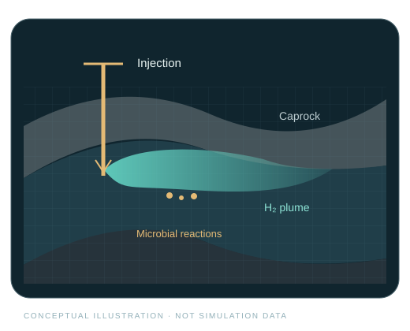
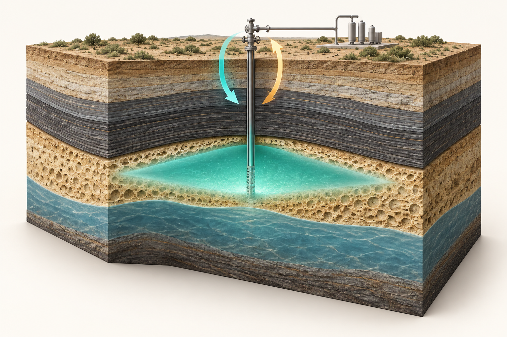
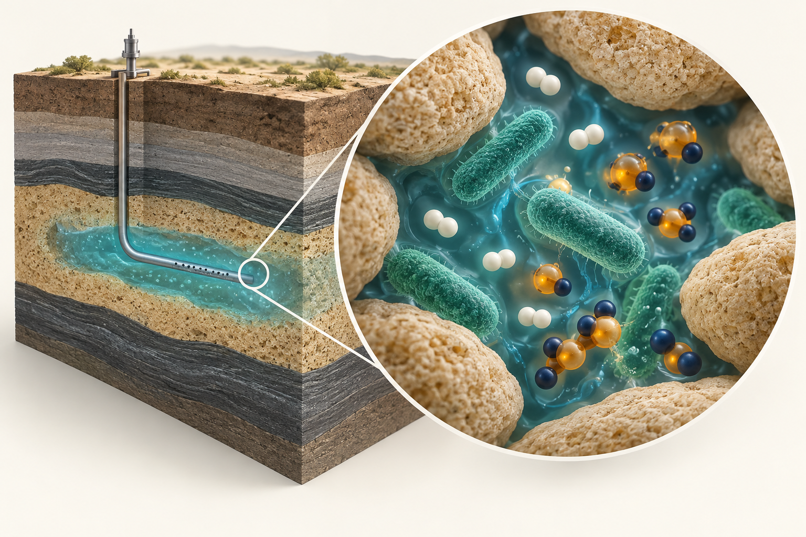
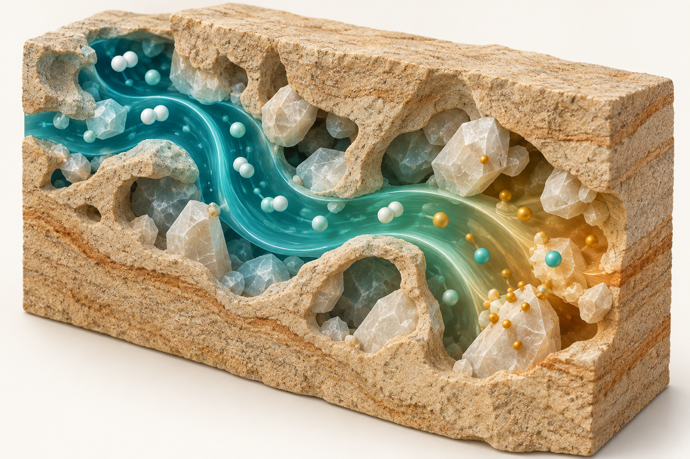

OPEN TOOLS FOR UNDERGROUND HYDROGEN STORAGE
Understand recovery.
Explore what changes it.
Quantify hydrogen losses and compare storage strategies with open MATLAB–MRST workflows for porous reservoirs.

Explore what H2sim can do¶
From reservoir cycling to reactive losses, connect a storage question to simulation results. Select a panel to discover the capabilities and examples.

01 · FLOW & CYCLING
Storage performance
How does hydrogen move through a storage cycle?
Explore capabilitiesClose overview
Simulate hydrogen injection, storage, and withdrawal in saline aquifers and depleted gas reservoirs. Examine plume migration, dissolution, component production rates, and well pressure across repeated cycles. Adapt reservoir properties and operating schedules to compare storage scenarios.
Explore aquifer storage → Explore depleted reservoirs →

02 · MICROBIAL REACTIONS
Hydrogen losses & gas quality
Which reactions consume the stored hydrogen?
Explore capabilitiesClose overview
Compare bacterial and abiotic storage scenarios, track microbial growth, and quantify hydrogen consumption by methanogenesis, acetogenesis, and sulfate reduction. Inspect how these reactions change hydrogen, carbon dioxide, and methane well streams, then test sensitivity to reaction parameters and storage duration.
Explore biochemical storage → Open the cycling notebook →

03 · REACTIVE CHEMISTRY
Chemistry & operating choices
When does chemistry change the storage response?
Explore capabilitiesClose overview
Couple reservoir flow and microbial kinetics with PHREEQC to investigate aqueous speciation, pH, and mineral reactions. Use compositional or multirate coupling to study chemistry feedback through injection, idle, and production periods. Compare scenarios to inform operating choices, with thermodynamic models supplying the gas–liquid partitioning.
Explore PHREEQC workflows → Explore phase behavior →Build the assessment you need¶
Start with hydrogen–brine flow in h2-store, add compositional transport and microbial reactions in h2-biochem, and include PHREEQC when aqueous and mineral chemistry matter. Thermodynamic models and PVT tables support the flow calculations. Open equations and saved simulation outputs let reservoir engineers and researchers inspect and adapt each workflow.
Start small. Build understanding.¶
Required dependencies, optional PHREEQC, and serial execution without Parallel Computing Toolbox.
A 2D aquifer cycle, microbial transport, thermodynamics, and PHREEQC validation.
A serial path for every selected example
Parallel Computing Toolbox is optional. PHREEQC COM examples require Windows MATLAB and a registered IPhreeqcCOM server; MRST-only examples do not.
Research & community¶
Papers, conference talks, and posters behind the simulation workflows.
16–18 November · La Rochelle, France
Elyes Ahmed’s invited talk on MRST, PHREEQC, and reactive hydrogen storage.